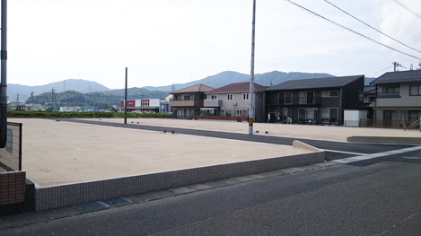
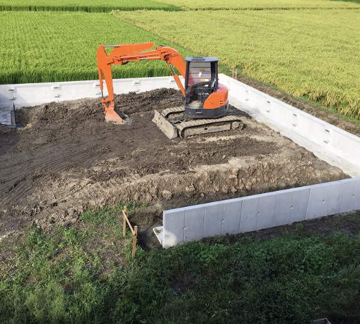
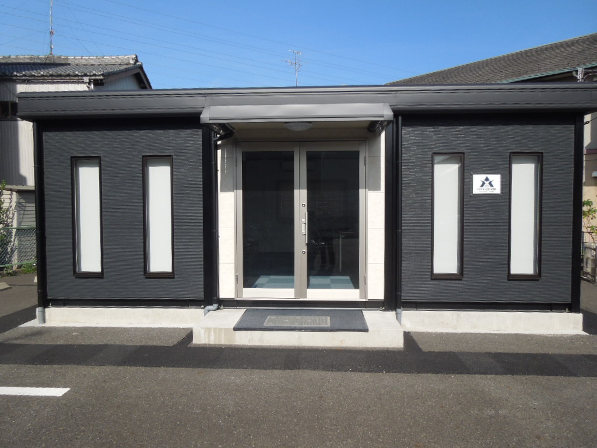
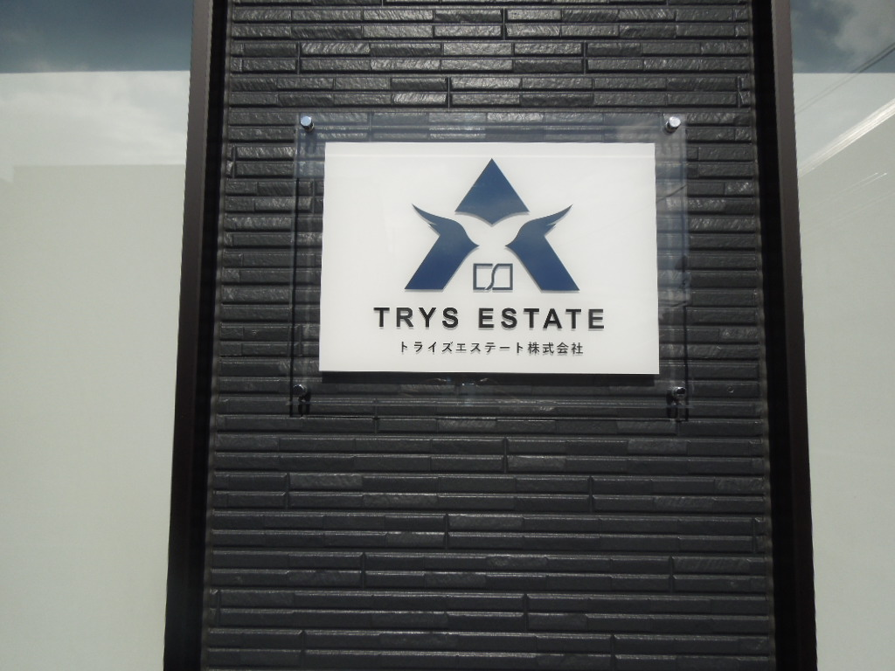
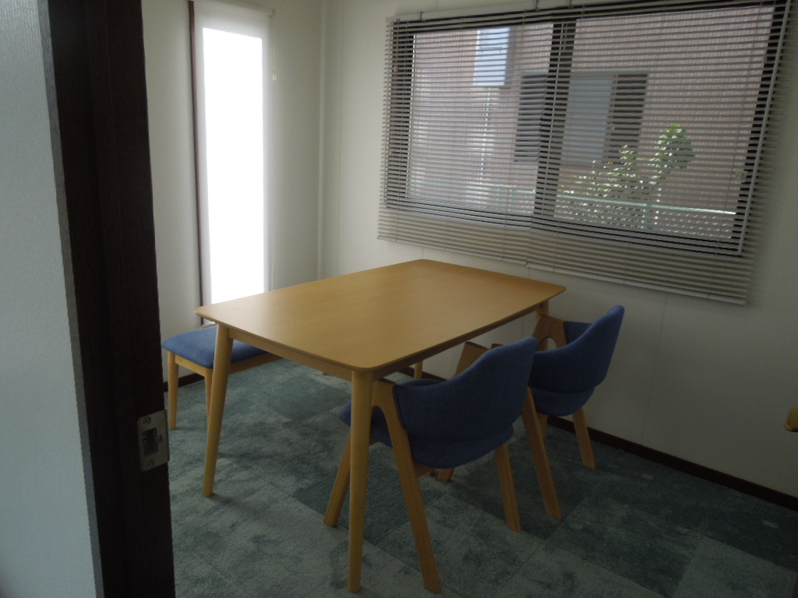

空き家
長く使っていない家、遠方にある家、管理が難しい家。
岐阜県・愛知県の不動産売却相談
空き家・相続不動産・農地の
売却相談
売れにくい理由ごと、買取・売却方法を考えます。
岐阜県・愛知県、どちらの不動産にも対応します。
相談だけでも大丈夫です。わからない状態から一緒に整理します。
こんなお悩みはありませんか？
相続した実家を
どうすればいいかわからない
使っていない農地の
管理が負担になってきた
荷物が残ったままで
片付けから進められない
他社に相談したが
話が進まなかった
対象となる不動産
物件の状態を整えてからでなくても構いません。現状をそのままお伝えください。
長く使っていない家、遠方にある家、管理が難しい家。
相続した実家や土地。名義や今後の方針から整理します。
田・畑など、維持管理や売却方法にお困りの土地。
家財や荷物が残った状態、修繕前の建物でもご相談ください。
事情を含めて状況を伺い、取り得る方法を一緒に考えます。
底地・借地・形状に特徴がある土地、他社で断られた土地など。
状況に合わせて選べる相談入口
どの入口からでも、同じ相談フォームにつながります。
無料相談・買取査定フォーム
相場を知りたい方、早く売却したい方、売れるか不安な方も、お気軽にご相談ください。
この画面ではまだ送信されていません。
※第1稿のため、実際の送信先はまだ接続されていません。
説明の見える信頼づくり
「なぜその方法なのか」「金額は何で変わるのか」を、順序立ててお伝えします。
まず状況と希望を確認し、売却以外の選択肢も含めて整理します。
曖昧な期待を持たせず、条件と理由をわかりやすくお伝えします。
土地、建物、残置物、活用コストなど、見ている要素を説明します。
現状を確認してから、必要な対応と進め方を一緒に考えます。
県境にとらわれず、物件ごとの地域性と需要を丁寧に確認します。
ご家族や近隣への配慮が必要な事情も、落ち着いてお聞きします。
査定額の考え方
単純な面積だけではなく、その不動産を次にどう生かせるかまで見て判断します。
査定について相談する →
土地の状態も含めて考えます
状態だけを見て決めつけず、必要な整備と活用方法を検討します。

周辺環境、道路との関係、形状、必要な整備などを確認し、その土地にどのような選択肢があるかを整理します。
土地について相談する →売却相談から引渡しまでの流れ
直接買取の特徴
トライズエステートが直接買主となるため、一般の購入希望者を探す販売活動や複数回の内覧対応が原則不要です。条件が合えば、仲介より少ない工程で引渡しまで進められます。
売却時期について相談する →※物件の状態や権利関係、必要な手続きにより、引渡しまでの期間は異なります。売却方法を先に決める必要はありません。
ご相談から売却まで
場所や種類、困っていることを伺います。
資料がなくても、わかる範囲から確認します。
建物、土地、周辺環境を確認します。
買取・仲介の違いと根拠を説明します。
内容を持ち帰って検討できます。
納得いただいた場合のみ、必要な手続きを進めます。
対応エリア
岐阜市周辺をはじめ、空き家・相続不動産・農地などをご相談ください。
名古屋近郊を含む住宅地・市街地の不動産も、同じ窓口で対応します。
エリア外や境界付近の物件も、まず所在地をお知らせください。
よくある質問
はい。相場や選択肢を知りたい段階でも大丈夫です。相談したからといって、売却を前提に進めることはありません。
はい。まず現状をお聞かせください。片付けの要否や進め方は、物件の状態を確認してから整理します。
はい。場所、現況、今後の希望を確認します。農地は条件によって手続きや可能な方法が異なるため、個別に確認します。
はい。岐阜県・愛知県のどちらもご相談いただけます。具体的な対応可否は所在地と物件状況を確認してお伝えします。
土地、建物、整備に必要な費用、地域での活用可能性などを総合して考え、見ている要素をご説明します。
相談する場所が見える安心
相談する場所と、相談後の進め方をわかりやすくお見せします。



会社情報
売るかどうかは、相談してから決められます。
物件の場所と、今わかっていることだけで構いません。